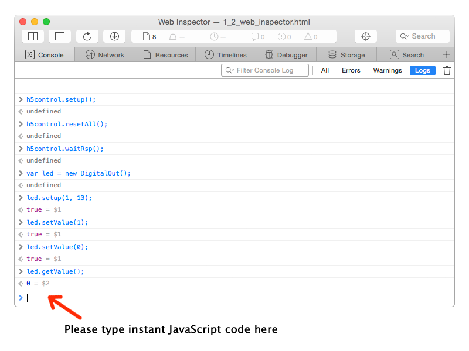

Before run your first web app to control your devices, you still need confirm you have started h5control Service program in your operation system (Mac OS X, Windows or Linux). The service program will set up a bridge between the hardware and your web apps. h5control service is a gateway enables the communication with your hardware through USB / bluetooth serial ports and transmitting bytes to your web pages through web socket and http requests.
With making HTML5 web apps, developers can put intelligent control logic and user-interface designs into one software container. And h5control framework provides all required drivers for hardware components. The developer could write the script code to control hardware as same as the way to handle objects in your HTML documents with ease.
JavaScript is the script language hosted on your web browser. In order to obtain all features to control your devices, a file named h5control.js need be included in your web page. Please add the following line in your HTML source. Now, the class library is available for talking with your hardware.
<script type="text/javascript" src="h5control.js"></script>
For web app developing, any popular web browser such as Chrome, Safari, Firefox, Internet Explorer or Edge provides a very useful developer tool named Web Inspector. It's convenient to debug your JavaScript code of your web app using Web Inspector in the web browser. Set up break points, step through code or watch variables, all are available with Web Inspector.

And now, please select Console tab in Web Inspector window, you can type JavaScript code in the instant command field. The code will be executed immediately after press Enter key. Web Inspector console is much similar to a command line environment where you can execute commands calling your hardware interactively. Let's begin to try some basic h5control JavaScript commands and familiarise yourself with h5control programming.
h5control.setup();
h5control is a global object declared in h5control.js. Usually, it's required to call function setup() to initialize the environment of h5control system before any device controlling. Then, h5control.js will call h5control service to create connections to your hardware.
h5control.resetAll();
To execute h5control.resetAll() will reset all connected hardware and clear the configuration in devices. h5control can write new configuration after the device reset.
var led = new DigitalOut();
To execute this code line will declare a new DigitalOut object for the LED light on your device. The object declaration must be required before configuring and handling the real component on the hardware.
led.setup(1, 13);
Now, need configure the hardware by calling function setup() of the led object. Two parameters are set in the function,
the first parameter is unit ID, and the second parameter is the pin number.
Every h5control-ready device must have an unit ID as the device address.
In fact, a h5control app on one computer can connect with multiple devices at the same time.
To assign an unique unit ID for each device should be necessary to recognize different devices in one h5control app.
However, only one device is connected in most h5control case. And then, the device unit ID is usually a
default number, the unit ID in factory defaults is always 1 .
Because the built-in LED on Arduino board is wired to pin 13, the second parameter is set to 13 in this case.
led.setValue(1);
Call function setValue() to light on or light off the LED. In the example, led is a DigitalOut object. The setValue function has a parameter to affect the digital output state, the parameter value can be set to 1 or 0.
led.getValue();
Call function getValue() to retrieve the LED state.
Normally, h5control adopts asynchronous mode while calling hardware for the most efficient program running.
Therefore, you should find nothing returned by the function. Instead, you have to make a callback function for
led.whenGetValue() to retrieve the LED state.
We will introduce the event callback regulation of h5control programming later, and here show you another alternative to
get the result in the function return value, this usage looks easy to use much more.
h5control.waitRsp();
Execute h5control.waitRsp() to disable the asynchronous calling mode.
Then, any function will always wait for a while until the hardware calling is finished, and return the result data in
return value.
waitRsp just means "wait for response".
Now, please call led.getValue() again, the LED state value will be returned instantly.
h5control.nowaitRsp();
Execute h5control.nowaitRsp() to enable the asynchronous calling mode.
Then, any function will never wait for the hardware calling finish.
nowaitRsp just means "no wait for response".
Important, nowaitRsp is the default mode that will make your program running more efficient.